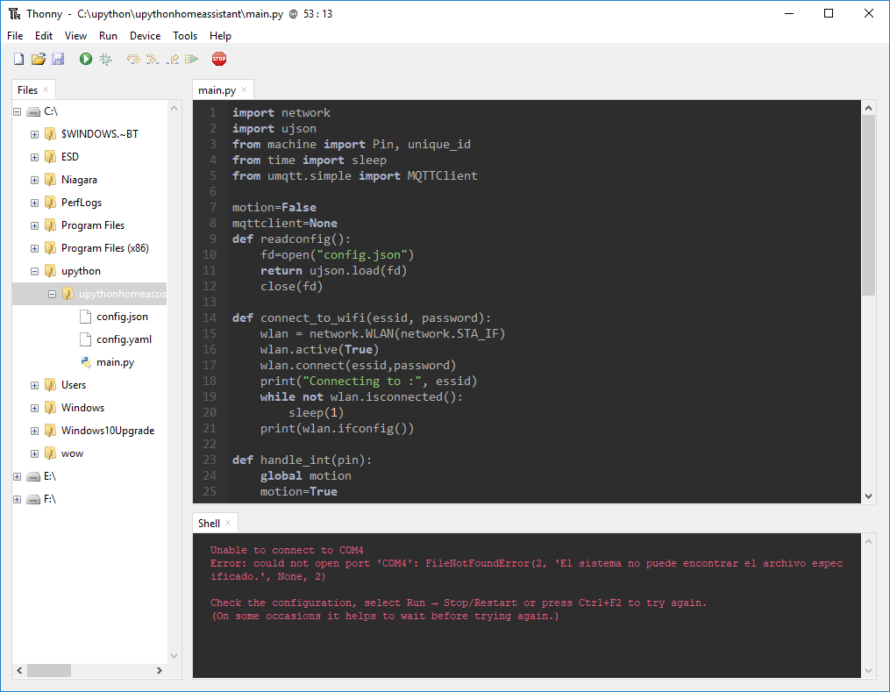

Instalación del Entorno
En esta página encontras información sobre que necesitaremos para trabajar con MicroPython.
Los programas o utilidades que necesitaremos son:
- Python
- Thonny
Pasaremos a repasar cada elemento:
Python
Para poder utilizar MicroPython y poder interactuar con las distintas placas, necesitaremos tener instalado Python 3.7 o superior.
Podemos descargar Python desde el siguiente enlace. Tambien podemos utilizar el gestor de paquetes de nuestra distribucion (Linux).
Para comprobar que version de python tenemos instalada, podemos usar el siguiente comando:
python --version
También es importante instalar el gestor de paquetes pip; para poder instalar las herramientas que necesitemos. Podemos comprobar que esta instalado con el siguiente comando:
pip --version
En caso de error, se puede usar el siguiente comando:
python -m pip --version
Para poder instalar pip usaremos el siguiente comando (En caso de no tenerlo instalado).
python -m ensurepip --upgrade
Thonny
Para este curso, usaremos el editor Thonny el cual nos va a permitir subir y ejecutar programas en nuestra placa programable.
Thonny es un editor muy ligero que esta construido en python y se puede utilizar de forma muy sencilla para crear nuestros programas tanto en local, como en MicroPython.

Para instalar thonny, podemos realizarlo de dos formas
Instalación propia
Nos descargaremos e instalaremos el software del siguiente enlace.
Instalación usando Pip
Para instalar usando Pip podemos usar los siguientes comandos:
pip install thonny
pip install thonny-esp # instala las extensiones para micropython
Despues simplemente escribiremos el siguiente comando:
thonny
En caso de error:
python -m thonny